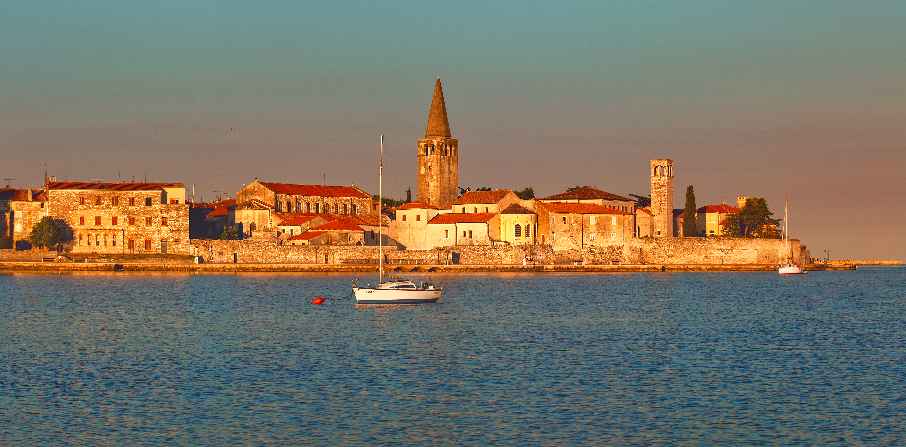
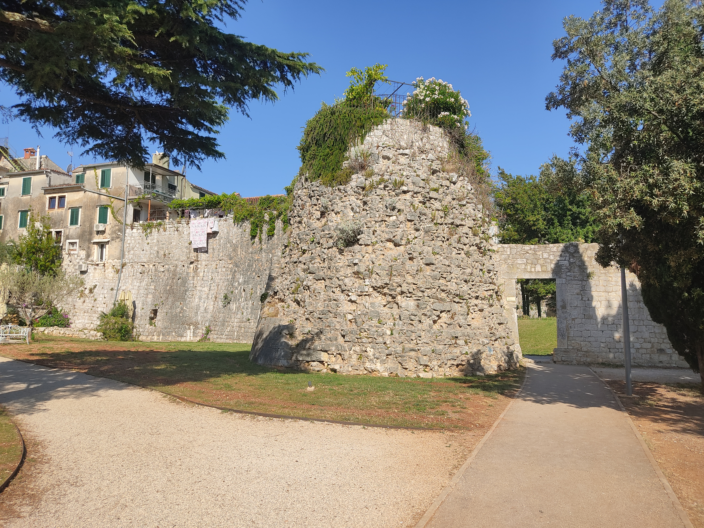
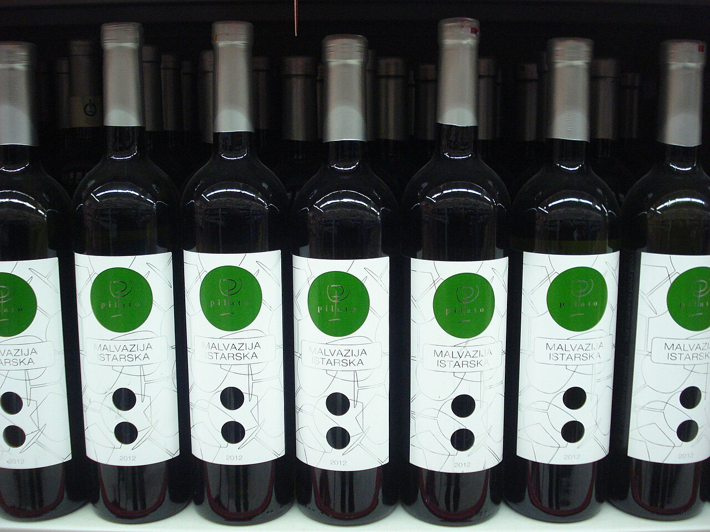

CURATORIAL DEEP DIVE 策展深度解析
走讀觀察點與細節解密
45.2268° N, 13.5938° E
“A Roman grid anchored in the turquoise Adriatic, where 6th-century golden tesserae whisper secrets across Venetian gothic balconies.”
走進波雷奇（義大利語：Parenzo），你踩踏的是兩千年未曾偏移的古羅馬主幹道石灰岩，仰頭遇見的是世界上最純粹的早期拜占庭金底鑲嵌畫，穿梭在小巷時，迎面而來的是威尼斯總督宮式的石雕花窗與海風。

波雷奇老城晨光俯瞰，半島探入亞得里亞海，兩千年羅馬正交網格與紅瓦屋頂清晰可辨。
不同於一般走馬看花，波雷奇的精緻尺度讓每一步都與兩千年歷史地層緊密咬合。
標準純淨 OpenStreetMap 圖層 ｜ 左右分欄雙向聯動 ｜ 點擊左側卡片或標記即時定位
Venetian Bastion • AD 1447
波雷奇如同地質沉積岩，不同時代的統治者未曾抹去前人，而是巧妙地在舊骨架上疊加新的藝術生命。
建於西元 6 世紀的主教 Euphrasius 任內，是世界上保存最完整的早期拜占庭大教堂建築群。這裡的黃金鑲嵌畫將**金箔夾在兩層玻璃之間**，並刻意以不同角度嵌入灰漿中，使得自然光線在不同時刻產生神聖的浮動微光。
關鍵看點解碼：
波雷奇是伊斯特利亞第一個主動宣誓效忠威尼斯共和國的城鎮。威尼斯將其作為亞得里亞海東航道的前哨港與木材供應地。
石刻政治學解密：
西元前 1 世紀，羅馬皇帝奧古斯都將此地定為羅馬殖民地。軍團測量員以最精準的羅馬十字大道（東西 Decumanus Maximus 與南北 Cardo Maximus）劃分出標準街廓（insulae），即便歷經拜占庭、威尼斯與奧匈帝國，街廓結構從未消失。
走讀空間彩蛋：


波雷奇所在的一帶保留了濃厚的雙語傳統（克語與義語）。伊斯特利亞的紅土（Terra Rossa）與石灰岩，孕育出帶有礦石感與杏仁清香的 Malvazija Istarska 白葡萄酒，與亞得里亞海現撈海鮮搭配，是走讀最後撫慰身心的終極讀本。
點擊任意影像展開高解析度典藏檔案與深度策展註解。
建議於午後 3:30 出發，順應亞得里亞海日照角度，將最神聖的馬賽克光暈與最浪漫的海角夕陽納入眼底。
細讀 1447 年威尼斯防禦工事石獅，由此邁入羅馬主幹道 Decumanus。
走過中庭柱廊、洗禮堂，登上鐘樓俯瞰紅瓦海港，最後在後殿半穹頂下沉浸於 6 世紀金底馬賽克光輝。
站在羅馬軍團殖民地的地基上，感受兩千年城鎮骨架的穩固。
繞行半島最西端，對望聖尼古拉島看夕陽沈入海平線，在濱海露天座點一杯冰鎮 Malvazija 與松露乳酪，結束一趟深邃的極東義大利走讀。
大教堂鑲嵌畫在下午斜射光透過側窗時最為耀眼；海角防波堤夕陽最佳機位在半島最西端的 Obala Matka Laginje。
推薦搭配：伊斯特利亞原生白酒 Malvazija Istarska + 亞得里亞海烤沙丁魚 (Srdela) 或生火腿 (Pršut)。